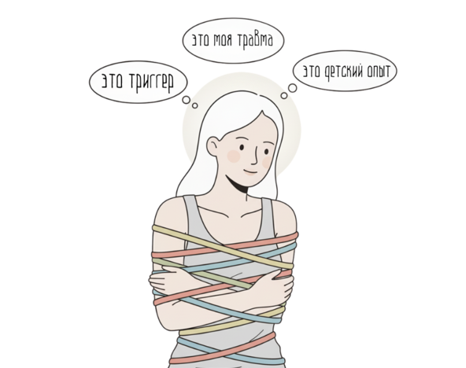
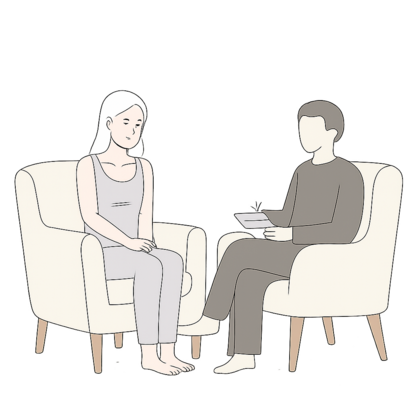
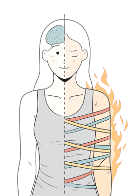
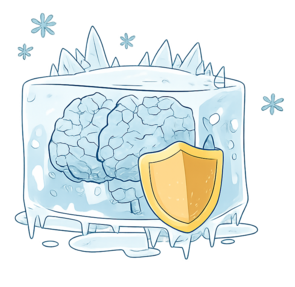
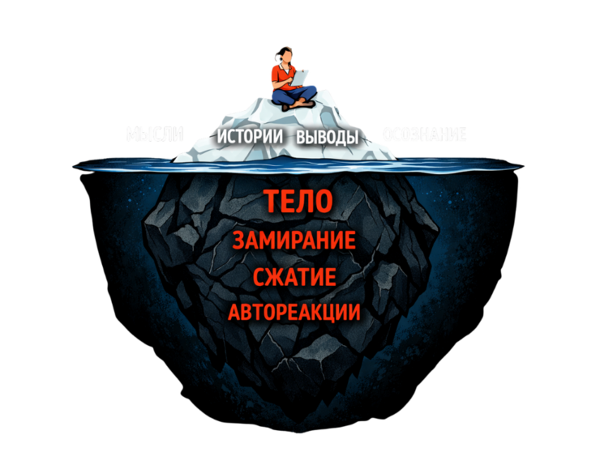
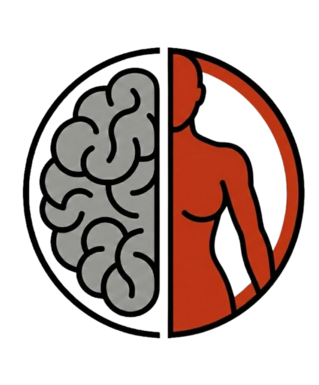
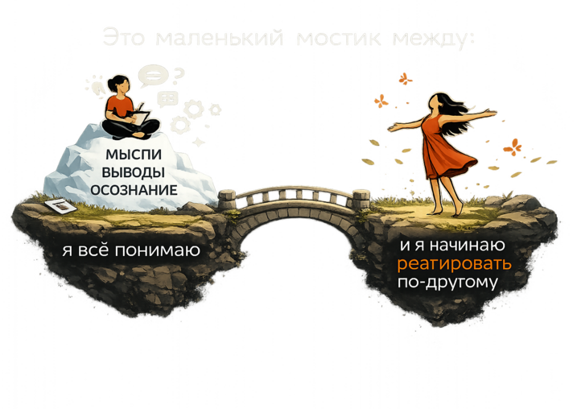
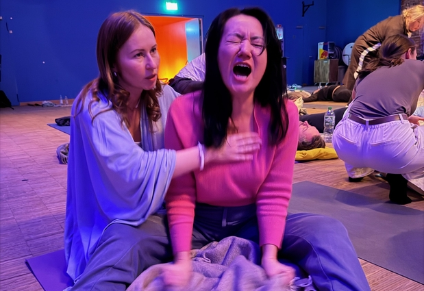

Почему ты всё понимаешь,
но ничего
не меняется
Для тех, кто уже был в терапии, читал книги, проходил курсы — и всё равно обнаруживает себя в тех же реакциях.
Я тоже всё понимала,
но всё равно срывалась
Если ты открыла этот текст, очень вероятно, что ты не новичок.
У тебя уже был терапевт. Возможно — не один.
- Ты читала книги, проходила курсы, марафоны, ретриты.
- Ты можешь объяснить, откуда у тебя эта реакция.
- Можешь разложить своё детство как кейс для учебника по психологии.

Головой ты знаешь:
это триггер
это моя травма
это детский опыт
Но тело в этот момент как будто даже не в курсе, что ты всё поняла.
Я знаю это состояние изнутри.
Я тоже была той самой клиенткой, которая может на сессии с терапевтом блестяще анализировать свои реакции — а вечером дома вести себя так, как будто никаких сессий не было вообще.
Ты просто работаешь не с тем слоем.
Почему инсайты не успевают
за твоим телом
Разговорная терапия делает важную работу:
- даёт тебе понимание
- связывает прошлое и настоящее
- помогает увидеть паттерны, которые раньше были в слепой зоне

Разговорная терапия делает важную работу: даёт тебе понимание, связывает прошлое и настоящее, помогает увидеть паттерны, которые раньше были в слепой зоне.
Но есть момент, в который она останавливается.
В момент, когда тебя накрывает, рулит
не та часть, которая «всё понимает».
Рулит тело.
«Это не он виноват, это меня триггернуло. Он просто опоздал на 15 минут, а не БРОСИЛ МЕНЯ.»

- сжимает челюсть
- заливает жаром лицо
- сдавливает грудь
- бей / беги / замри

Травма в теле — это не воспоминание
Это застывшая реакция, которая когда-то спасала тебе психику. Тогда ты не могла уйти, ответить, защититься. Твоё тело выбрало то, что помогло выжить: сжаться, замолчать, быть удобной.
Но в момент триггера это тело всё ещё живёт по той же инструкции. На диване у терапевта ты взрослая — а на кухне в конфликте тебе снова 5, 10 или 15.
У травмы есть два слоя:

Почти не трогала второй.
Ты доросла до следующего уровня
Очень легко скатиться в мысль:
- Раз я хожу к терапевту и всё равно срываюсь — со мной что-то не так
- Надо ещё сильнее стараться
- Надо ещё больше «работать над собой»
ты дошла до потолка именно этого формата работы.
разговорная терапия
заточена под голову

твои срывы
управляются телом
Когда ты уже 2–3 года в терапии и всё ещё чувствуешь себя так, как год назад — это не значит, что терапия «плохая» или ты «не старалась».
Чаще всего это значит: пора добавить телесный уровень, а не бесконечно увеличивать дозу разговоров.
Очень знакомые истории
посмотри, найдёшь ли ты здесь себя
Но когда ребёнок в третий раз проливает сок на пол — она орёт так, будто её предали.
Но как только в её жизнь заходит «тот самый» — она снова забывает о себе, подстраивается, терпит, пока не выгорает до нуля.
Но при любом конфликте с близким: каменеет лицо, сжимается живот, ночью бессонница и ощущение внутренней сирены.
Мини-практика:
честный разговор с телом за 10 минут
- найди 10 минут без людей и телефона
- сделай шаг за шагом, не перепрыгивая
Вспомни что-то недавнее, где ты повела себя «не так, как хотела»:
- накричала
- замолчала и проглотила
- всю ночь прокручивала разговор в голове
Не бери самый травматичный эпизод жизни.
Достаточно чего-то среднего по боли, но живого.
Не три, не десять — одно.
Где сейчас больше всего отзывается этот эпизод?
Это может быть: сжатие в груди, ком в горле, напряжение в челюсти, спазм в животе, тяжесть в плечах — или наоборот пустота, онемение.
Не анализируй. Просто отметь: вот здесь.
Если нужно — включи таймер. В эти 30 секунд твоя задача:
- не успокоить
- не раздышать
- не заполнить светом
а просто не убегать.
Отмечай: насколько это плотное, горячее/холодное/тяжёлое. Только наблюдаешь. Без попыток исправить.
Что ты тогда хотела сделать, но не смогла?
Не «что я думаю», а именно: что это ощущение хочет.
Часто приходит не фраза, а импульс: крикнуть, уйти, хлопнуть дверью, сказать «мне больно», не извиняться.
Уловить, какое действие было тогда невозможно.
Не на реальном человеке — в безопасном формате.
- Если хотелось кричать — крикни в подушку
- Если хотелось уйти — встань и сделай несколько шагов
- Если хотелось сказать «мне больно» — скажи это вслух в пустой комнате
Да, это может выглядеть глупо. Именно поэтому тогда ты этого не сделала.
Сейчас твоя задача — показать телу, что теперь это движение возможно хотя бы в таком, пробном формате.
Что ты только что сделала на самом деле
Вполне возможно, что внутри уже звучит «И что это даёт?» или «Я и сама могу покричать в подушку».
Суть — в последовательности:
- ты вспомнила конкретную ситуацию
- вместо анализа — пошла в тело
- дала ощущению время и внимание
- спросила, чего тогда хотелось на уровне действия
- позволила себе хотя бы чуть-чуть сделать то, что тогда пришлось сжать

Это ещё не PF_R. Но это уже не чисто разговорная терапия.
Это тот самый «следующий слой», которого тебе всё это время не хватало.
Когда разговорная терапия
перестаёт быть единственным ответом
Но есть несколько честных признаков, что для тебя этот формат уже отработал своё:
- ты больше года в терапии, а тело в острых ситуациях реагирует как раньше
- ты можешь заранее предсказать инсайт, который снова услышишь на сессии
- ты устаёшь от разговоров не потому что «лень» — а потому что я это уже тысячу раз проговаривала
- внутри тянет не к новым объяснениям, а к тому, чтобы почувствовать реальный сдвиг хотя бы на 10–20%
Голова уже сделала свою часть работы.
Дальше очередь тела.
Что можно сделать дальше
Если убрать имена методик, останется простой факт:
Ты можешь:
- возвращаться к практике из этого гайда и отслеживать, как меняется ощущение в похожих ситуациях
- честно поговорить с текущим терапевтом: «Мне хочется добавить в работу телесный уровень, давай подумаем, как это сделать или к кому пойти дополнительно»
- начать исследовать безопасные форматы телесной работы: телесно-ориентированная терапия, PF_R, соматические практики
если ещё раз очень умно о ней поговорить.
Если хочешь не только понимать,
но прожить

То, чем я занимаюсь — PF_R — это не замена терапии и не волшебная кнопка «стереть прошлое».
Это формат, где мы работаем не с тем, что ты думаешь о своей истории, а с тем, как эта история живёт в твоём теле: где застряло «замри», где не случилось «сказать», где до сих пор держится «я не имею права».
Часто это выглядит неэстетично. Но именно за этим приходят те, кто уже наелся красивых объяснений.
Если ты читаешь эти строки и внутри откликается:
- «Да, это про меня»
- «Я всё понимаю, но всё равно...»
PF_R — интенсив и индивидуальная работа.
После этого уходит:
- ощущение «я всё понимаю, но ничего не меняется»
- автоматические реакции, которые ты уже устала объяснять себе
- необходимость каждый раз заново объяснять партнёру, почему ты такая
Дальше у тебя всегда есть выбор:
остаться на уровне инсайтов — или попробовать зайти глубже.
Уже сам факт, что ты дочитала до конца и честно посмотрела на своё тело — это не мало.
Ты перестала делать вид, что «со мной всё нормально, просто нужно ещё пару книжек».